What is RL
RL也是ML的一种，因此其本质也是找一个function。
在RL中，有一个actor和一个environment，environment给actor一个observation，actor根据observation产生一个action，此action会影响environment，同时environment会给actor一个reward来判断此action的好坏。而我们要找的function其实就是actor，目标是maximize reward。
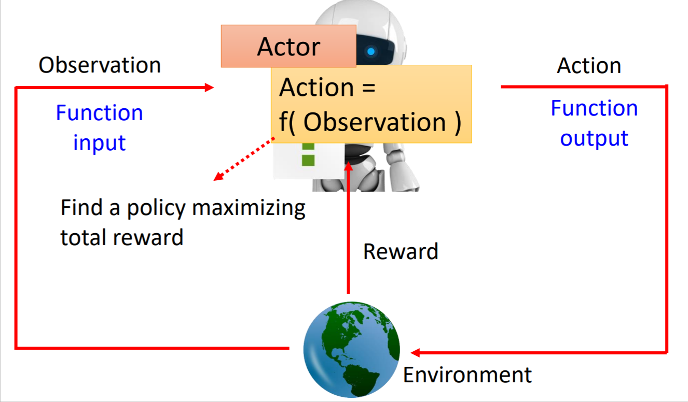
由于我们说RL也是ML的一种，那么实现的流程自然有三步：
- Function with Unknown
Actor就是一个Policy Network，它的input是observation，output是action。
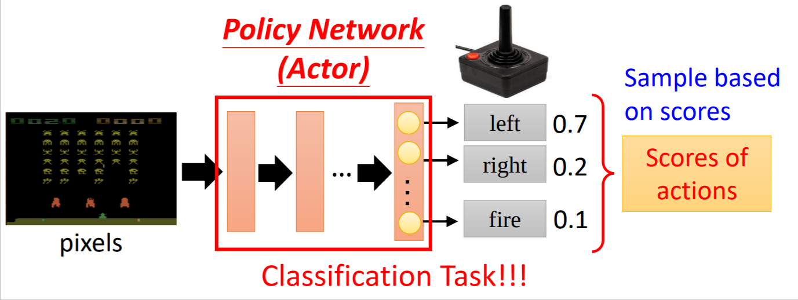 - Define “Loss”
假如在玩space invader，那么经过很多个turns后游戏结束，从游戏开始到结束的整个过程叫做一个episode，这中间会得到很多reward，Total reward(R,or return)就是reward的总和：我们的目标就是maximize这个R，如果给他加个负号，那就可以是loss了。 - Optimization
整个流程是一个observation产生一个action，此action影响env产生另一个observation…以此类推，整个流程可以看做一个observation和action的sequence，记作$\tau$。而我们要optimize的就是每一组observation和action对应得到的reward之和。
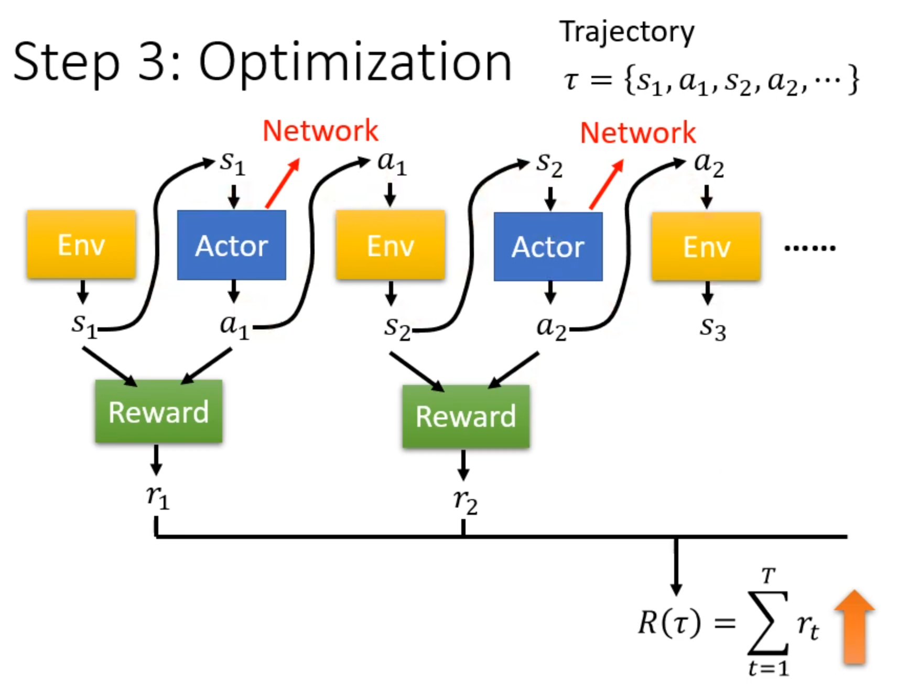
实际上要面临的问题有很多，首先actor是sample出来的，说明这个大network的某个layer是随机的；另外，env和reward根本就不是network，他们都更像一个blackbox；更糟糕的是，reward和env都是带有随机性的。
因此，RL真正的crux在于如何Optimization。
Policy Gradient
How to control your actor
当actor遇到某个observation $s$的时候，你想要让actor采取某个特定的action $\hat a$，或者遇到$s\prime$的时候，你想要让actor不采取某个action $\hat a\prime$（可以采取任何其他action），可以采取以下策略：
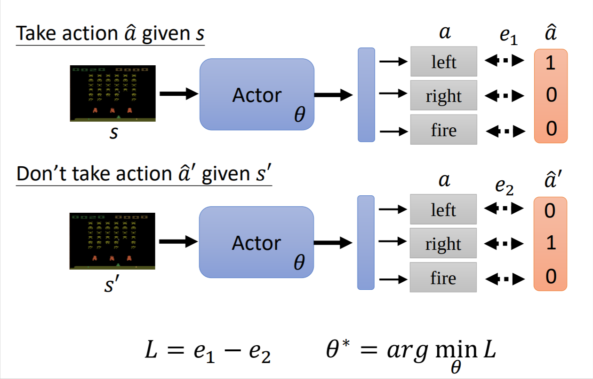
其中$e$是cross-entropy。由此我们就可以得到一种Loss的定义方式：
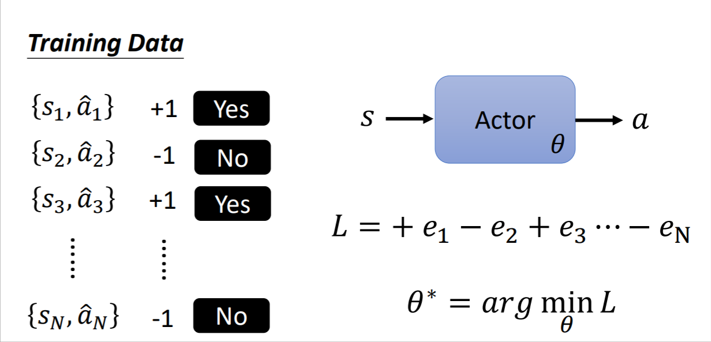
当然可以更进一步的修改，原本的是要执行-不要执行的binary classify的问题，我们可以定义更加细化的expect：
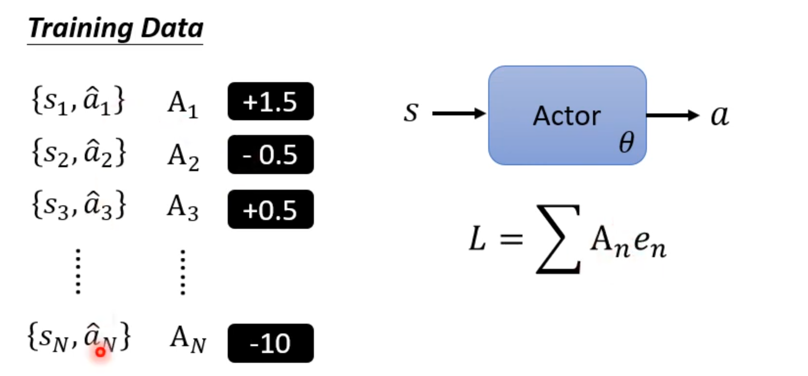
这样做的难点在于如何确定$A$的值以及如何得到Training Data。
Loss Version0
随机初始化一个actor，让他去env中实践一下，得到一系列的observation、action和reward，直接用reward当做A的值：
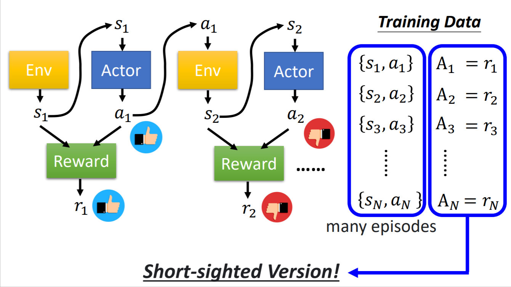
但是这样做，完全没有考虑全局，而只是考虑了当前这一步的reward。因此这样做的效果并不好。并且，牺牲当下利益获取长远利益也是很重要的，而这种做法完全不会考虑这种情况。
Version1
改进一下，加上全局的考虑，可以累加当前action后所有的reward作为评估标准，我们将cumulated reward记作G：
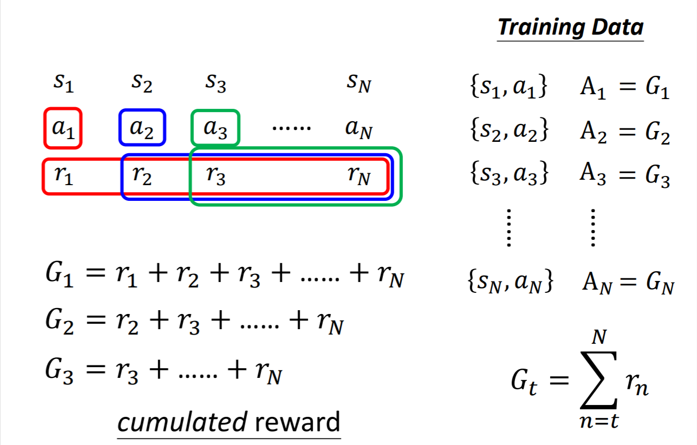
但这样，越靠前的action就会积累到更大的reward，这明显不太合理。
Version2
我们给cumulated reward加上一个discount factor：
Version3
好坏是相对的，因此我们要对G进行normalization：
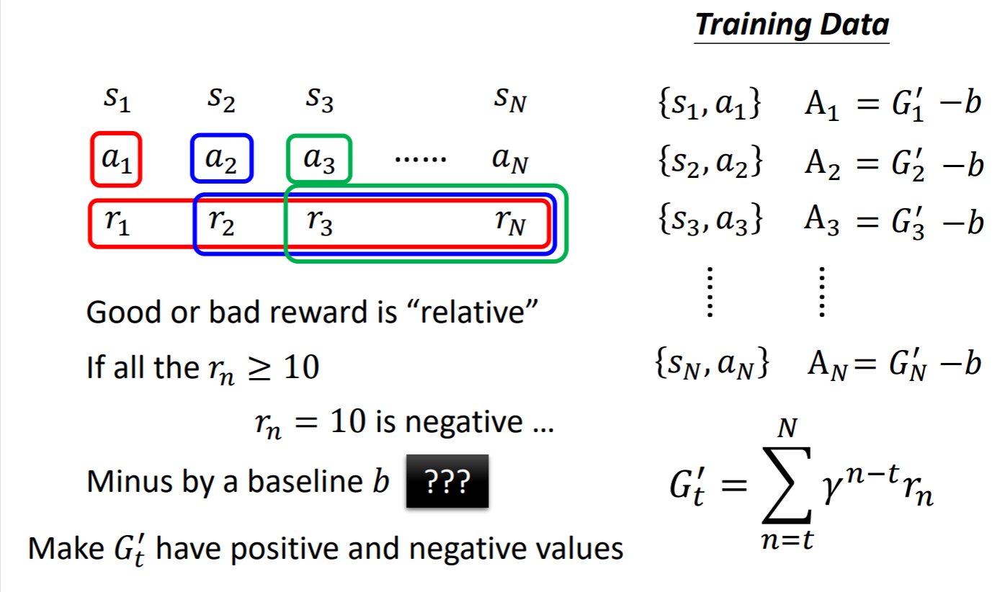
policy gradient
有了Optimization的目标后，那么就能做Gradient Descent了：
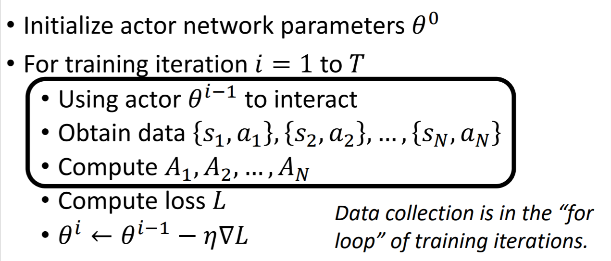
我们发现，收集training data是在for循环里进行的，因此每次迭都需要data collection，这是非常花时间的。
[scode type=”yellow”]同一批action data，对于不同的actor parameters效果是不同的，因此需要不停的搜集新的data。[/scode]
[scode type=”green”]搜集资料的时候，要有一定的exploration，即actor会采取更加随机的action，这样做能让actor尝试更多的可能。[/scode]
On-policy v.s. Off-policy
上面讲到的要训练的actor与和env互动的actor是同一个actor，叫做on-policy，如果二者是不同的actor，那么叫做off-policy。off-policy的好处是：可以减少收集资料的次数。
一个常用的off-policy的方法：PPO
Actor-Critic
critic的含义即给定一个observing s，某个actor $\theta$的好坏。
以value function$V^\theta(s)$举例，给定一个actor和一个obeservation，它能“未卜先知”预测cumulated reward。
实际上，$V^\theta(s)$是一个network，我们需要去训练他。
How to estimate $V^\theta(s)$
- Monte-Carlo(MC) based approach
直接使用actor的cumulated reward $G_a$作为训练资料去训练value function。这种方法需要整个流程结束才能得到训练资料。
MC的variance很大，因为$G_a$是有随机性的，所以每次得到的$G_a$的差别就会很大 - Temporal-difference(TD) approach
相较于MC，TD方法不需要走完整个流程，TD只需要$s_t,a_t,r_t,s_{t+1}$即可估测cumulated reward。
我们假设$\gamma=1$，由于：可得：那么训练value function即：使得$V^\theta(s_t)-\gamma V^\theta(s_{t+1})$和$r_t$越接近越好。
TD中，有随机性的是$r$，但$r$的variance比$G_a$小，因为$G_a$是很多$r$的summation。但TD中存在的问题是$V$的估测可能会不准。尽管如此，TD仍是比较常用的。
[scode type=”blue”]两种方法最大的区别在于：
MC会假设$s_a,s_b$之间存在某种关系，即$s_a$会影响$s_b$
TD会假设$s_a,s_b$并不存在相互的影响[/scode]
Version3.5
在version3中，对G进行了标准化即-b，那么b要定义为多少呢？在这个version中，$b=V^\theta(s_t)$
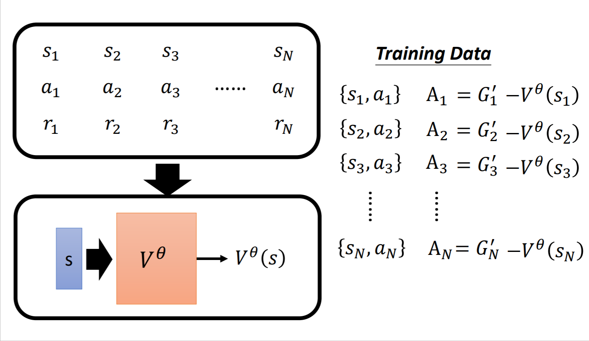
这样做的道理是：由于action是sample出来的，因此$a_t$是不确定的。$G_t^\prime$是执行了$a_t$后的cumulated reward，依照上面的计算，如果$A_t>0$，那么说明$a_t$比cumulated reward的期望值要大，说明这是一个好的动作；反之则是一个坏的动作。
但是这里有一个问题：$G_t^\prime$是一个sample，而$V^\theta(s_t)$是一个平均，用sample去减掉平均可能并不是很合理。
Version4
让上述的不合理变为合理，即用平均减去平均：
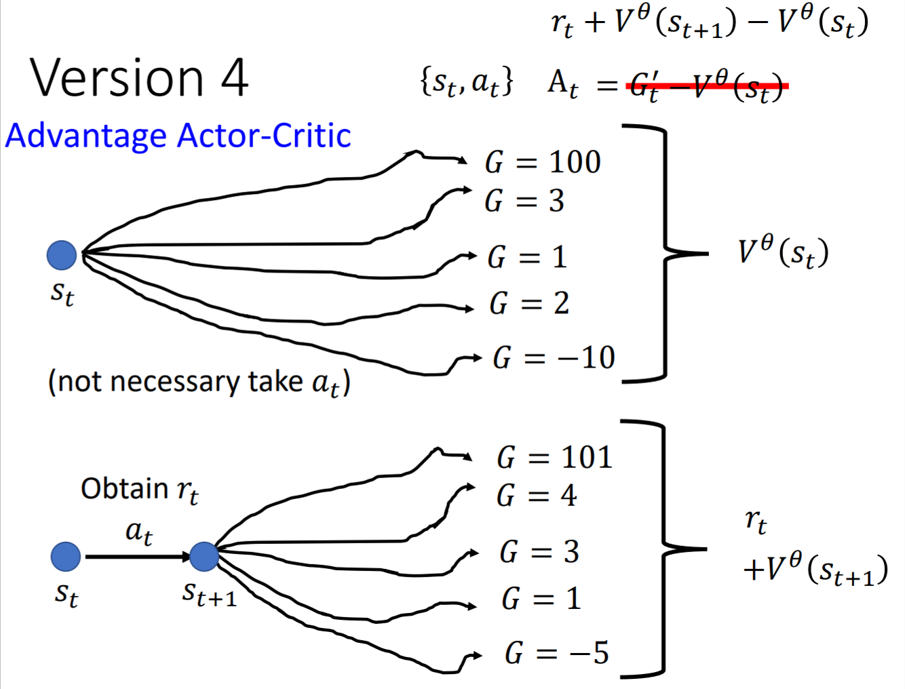
这是一个常用的方法：Advantage Actor-Critic
Tip of Actor-Critic
actor是一个network，input是observation；critic是一个network，input也是observation，既然如此，我们就能让他们共享部分parameters。
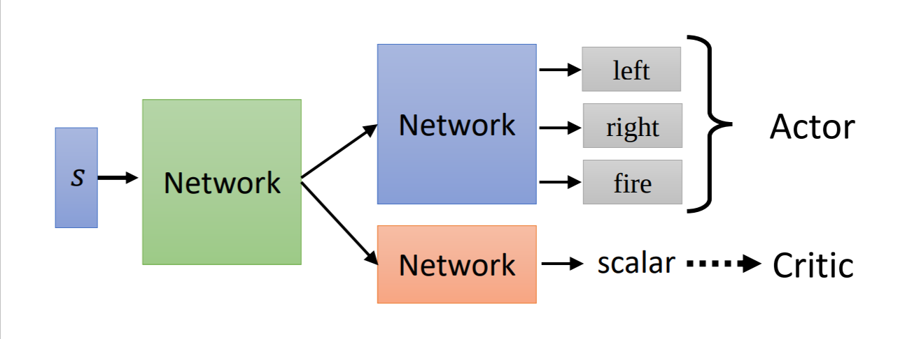
Reward Shaping
假设reward在绝大多数情况下都是0，只有在某种情况下才会得到一个reward（例如：下围棋），那么上述方法就会出现问题：不论采取怎样的action，得到的reward都差不多。
拿VizDoom（一款fps游戏）举例，《Training Agent for First-Person Shooter Game with Actor-Critic Curriculum Learning》进行了如下的reward shaping：
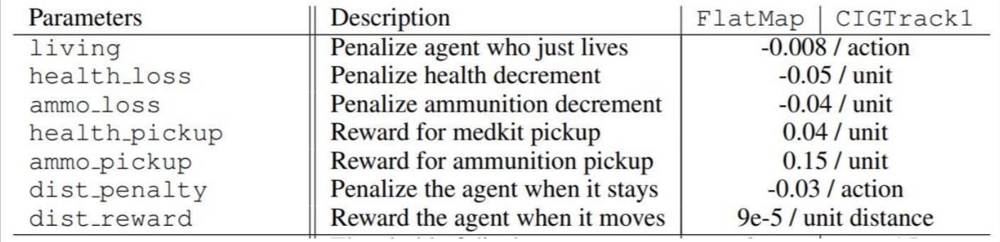
一个知名的做法是：《Curiosity-driven Exploration by Self-supervised Prediction》。简单来说就是：actor看到有意义的新鲜的东西会有reward。
No Reward:Learning From Demonstration
在很多情况下，很难定义reward是什么。人为定义reward带有很强的主观性，容易出问题——引起actor很奇怪的action。
Imitation Learning
在没有reward情况下，可以提供一些expert的示范（每个示范是一个trajectory）用于actor学习。
这听起来很像supervised learning，就像机器只要复制人类的行为。但有些情况人类提供的示范并没有出现过，或者有些行为不该模仿而有些行为应该模仿，完全复制人类行为就会出现问题。
解决方法为：Inverse RL。基本思想为：本来不知道reward function，但可以通过expert的示范学到reward function。
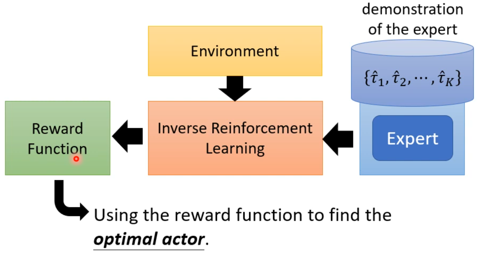
其大体结构如下：
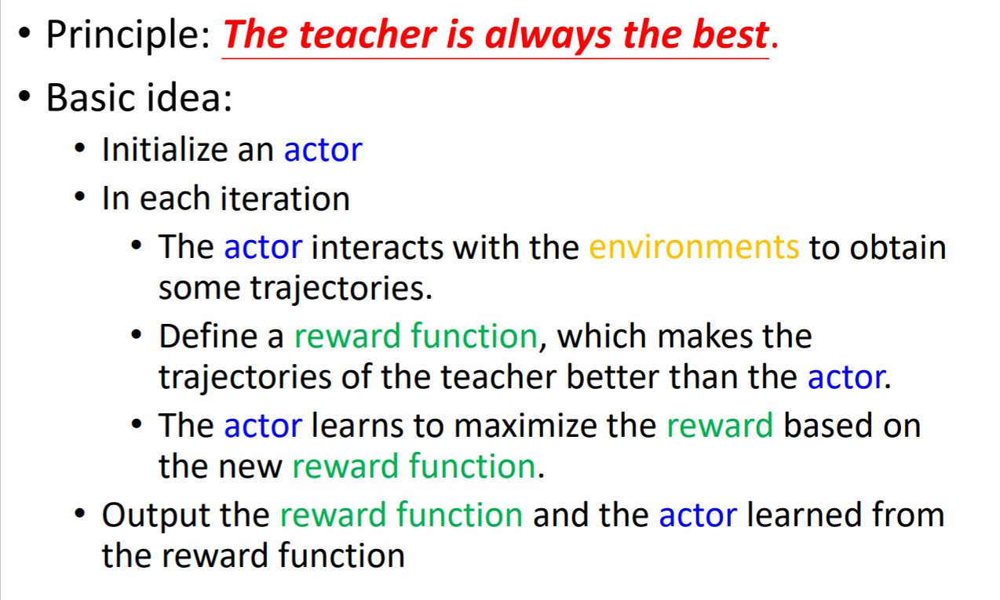
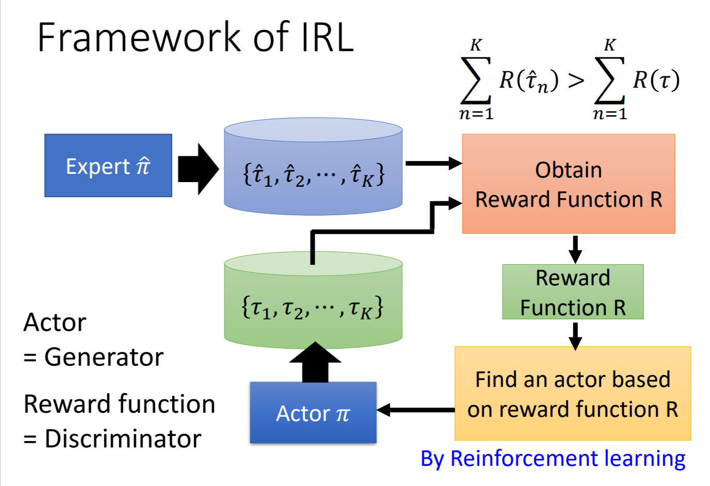
在训练机器手臂方面效果很好。